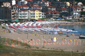
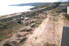
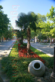
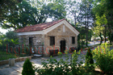
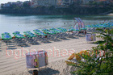
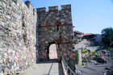
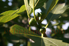
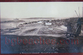

Sozopol Beach Guide
About Sozopol
Sozopol is ancient town with over 2,600 years of history. This destination features UNESCO old town, multiple beaches, cultural festivals, marina, traditional architecture, making it ideal for history enthusiasts, culture seekers, families, nightlife. The Bulgarian Black Sea coast offers 378 kilometers of diverse beaches, and Sozopol provides its own unique character and attractions.
What to Expect
The beach area at Sozopol features fine to medium sand typical of Black Sea beaches. During summer months (June-September), water temperatures range from 22-25°C (72-77°F), perfect for swimming. The area offers standard beach amenities including umbrella and sunbed rentals (typically 10-20 BGN per day), changing facilities, and food services. Peak season runs from mid-July through mid-August, when the beaches are busiest and prices highest.
Getting There & Practical Information
The nearest airports are Burgas (BOJ) and Varna (VAR), both serving international and domestic flights. Bus services connect major coastal towns during summer. Accommodation ranges from budget guesthouses (40-60 BGN/night) to mid-range hotels (80-150 BGN/night). Bulgaria uses the Bulgarian Lev (BGN), approximately 2 BGN = 1 EUR. English is commonly spoken in tourist areas.
Nearby Attractions
Beyond the beach, visitors can explore Archaeological Museum, old town churches, Ravadinovo Castle. The Bulgarian coast combines natural beauty with historical sites, traditional villages, and opportunities for hiking, water sports, and cultural experiences. Each location offers something unique while maintaining authentic Bulgarian coastal character.
Best Time to Visit
June and September offer excellent weather with fewer crowds and better prices compared to peak July-August. Water is warm enough for comfortable swimming from mid-June through mid-September. For the quietest experience and best value, consider late May or early October, though some facilities may have reduced hours.
Tips for Visitors
Bring high SPF sunscreen (30+) as the sun is strong. Many beach vendors prefer cash. Learning a few Bulgarian phrases is appreciated. Book accommodations in advance for July-August. Consider renting a car to explore multiple beaches. Try local restaurants for authentic Bulgarian cuisine and fresh Black Sea fish. Beach umbrellas and sunbeds are available but bringing your own gear saves money.
Photo Gallery
Browse our collection of photos from Sozopol showing the beach, facilities, and atmosphere. These authentic images help you understand what to expect and plan your visit effectively.
Different taste
Fort Wall
Moonlight
The beach after Harmani
Watter Attraction
Sozopol10- 
Harmani Beach
Historic Digs- 
Devastated
Anchor- 
Palms - 
Chapel - 
Central Beach
Old Town
Cliffs
Sozopol24- 
Fort wall in the daytime
Sozopol28- 
Sozopol29
Sozopol30
Sozopol31
Sozopol32
Sozopol33
Sozopol34
Sozopol35
Sozopol37
Fishing
Sozopol39
Yachts
Pavement
Art Galleries
Architecture
Sozopol44
Old photo of the port
Sozopol46
Old photo of the wind mill- 
Old photo of Sozopol
Sozopol49
Map
Sozopol54